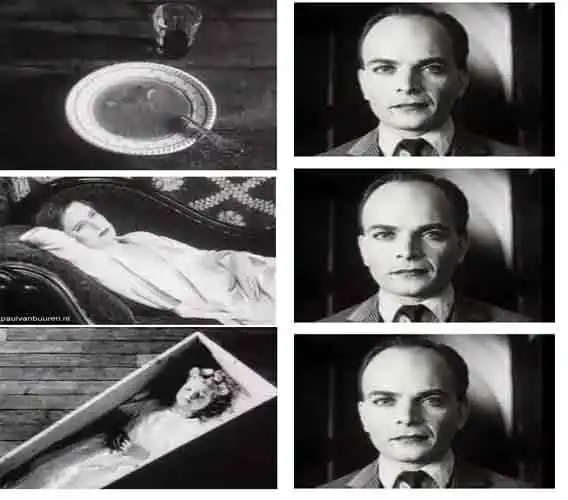

Week 6 · Film Studies
In 1917, the Bolsheviks took power from Tsar Nicholas II.
The "New Soviet Society" inspired filmmakers to create film geared to the needs of the working people.
Film was not an art, but a product in service of the masses — this was called Soviet Montage Cinema.
Soviet Cinema was about education — particularly the new Soviet government wanted to educate people on Marxism.
Examines the historical effects of capitalism on labor, productivity, and economic development, and argues that a worker revolution is needed to replace capitalism with a communist system.
1920s Marxist Film Theory emerged during 1920s Soviet Union.
In 1917, the Communist Party declared cinema vital to the arts.
Key figure: Sergei Eisenstein was one of the founding leaders of Marxist film theory.
Soviet Filmmakers wanted to move away from the Hollywood narrative structure.
In film theory, a montage is the assembly of various clips, strung together to create a deeper meaning.
In today's cinema, a montage is a sequence of varying shots, edited together to make a larger narrative statement than made by any of the shots individually. Montage is an essential tool in video editing.
The early Soviet filmmakers theorized that through editing, shots could be placed in juxtaposition to one another to create a relationship.
Kuleshov found that the way you edit together a montage of different shots during post-production influences your audience's emotional response.
The same neutral shot of an actor's face was paired with different images — food, a coffin, a child — and audiences interpreted the actor's expression differently each time.

Length / Fixed Pattern — cuts based on a fixed number of frames regardless of content.
Use of rhythm of shots to create a dynamic flow and enhance the emotional impact of a scene.
Establish the tone of a scene through editing shots together that have the same thematic aim.
Evoking of emotion through contrasting images — creating meaning beyond what is shown.
Combination of all four other types: Intellectual, Metric, Rhythmic, and Tonal.
Example Requiem for a Dream (2000) · Dir. Darren Aronofsky
Example Whiplash (2014) · Dir. Damien Chazelle
Example Interstellar (2014) · Dir. Christopher Nolan
Example Strike (1925) · Dir. Sergei Eisenstein
Example The Untouchables (1987) · Dir. Brian De Palma
Dir. Sergei Eisenstein
Battleship Potemkin was a significant turning point in Soviet Montage cinema.
The Odessa Steps sequence demonstrates Rhythmic, Tonal, and Intellectual Montage all working together.
Battleship Potemkin 1925 · Sergei Eisenstein
Dir. Denis Villeneuve